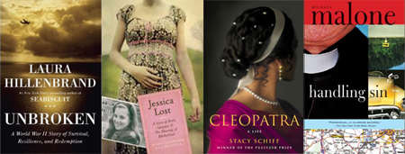

Book Clubs
The Directions Book Club
The Directions Book Club is taking a break for the summer and will resume Sept. 13 at 10 a.m. to discuss Unbroken: A World War II Story of Survival, Resilience, and Redemption
by Laura Hillenbrand.
Here are the books we will be reading this fall:

- Oct. 10:
Jessica Lost: A Story of Birth, Adoption & The Meaning of Motherhood
by Bunny Crumpacker - Nov. 14:
Cleopatra: A Life
by Stacy Schiff - Dec. 12:
Handling Sin
by Michael Malone
The Other Book Club
The Other Book Club will resume on Aug. 25 at 7 p.m. at the home of Diane Parfitt. Member will be emailed directions. New members, call (910) 678-8899 for directions. At this meeting, we will select new books to read this fall.
Join Us!
NEW MEMBERS ALWAYS WELCOME! If you would like to join a book club, please contact us or call (910)678-6688.
You know you've read a good book when you turn the last page and feel a little as though you have lost a friend.
— Paul Sweeney